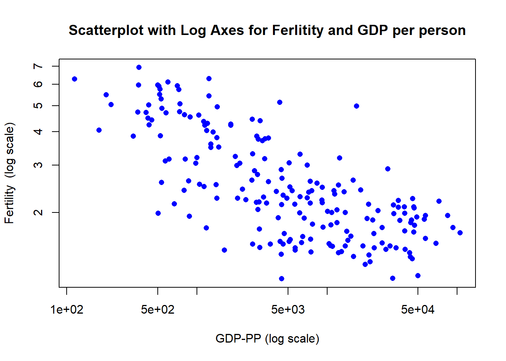
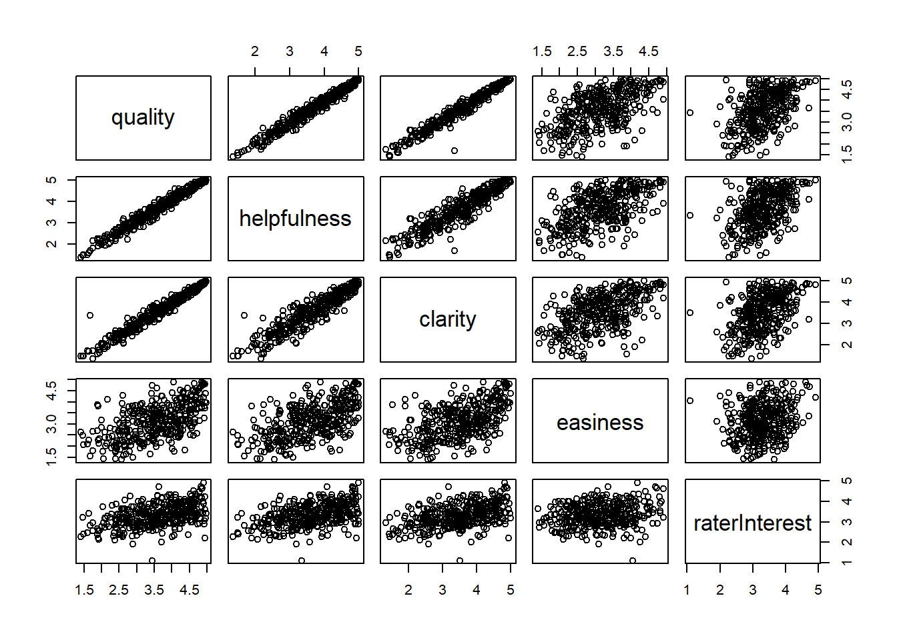
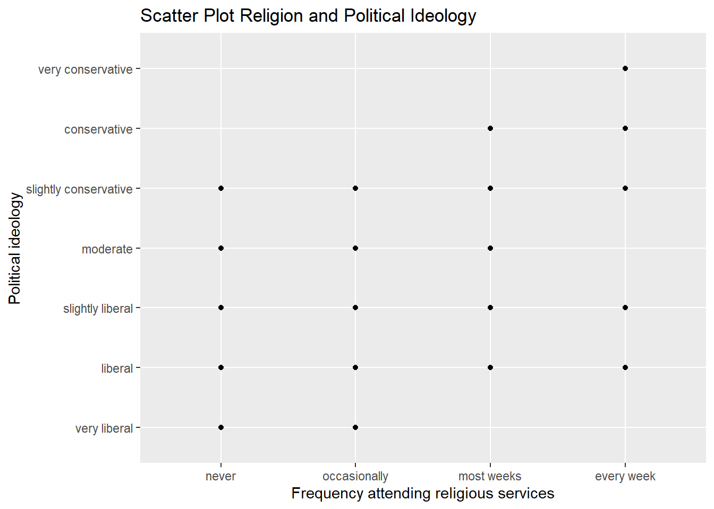
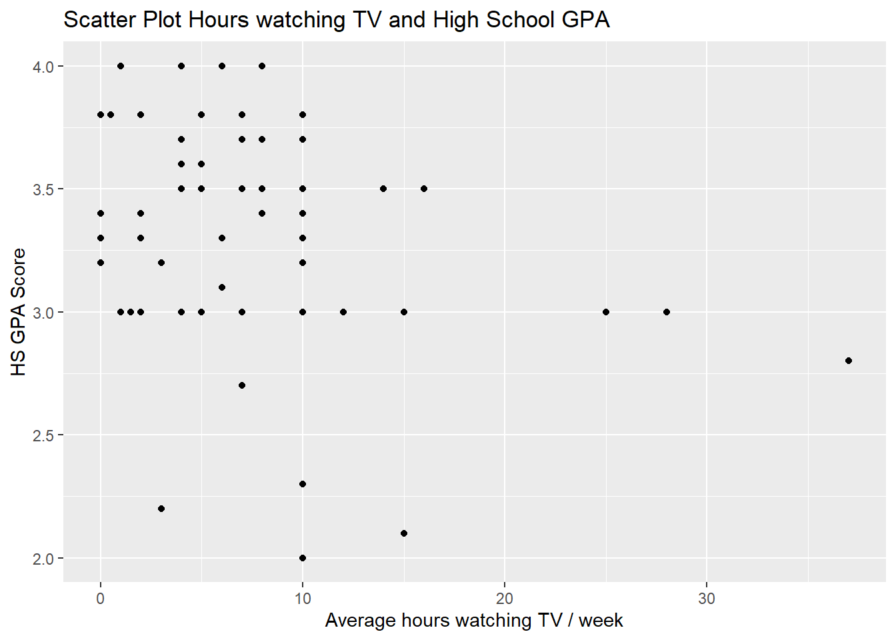

Code
knitr::opts_chunk$set(echo = TRUE, warning = FALSE)knitr::opts_chunk$set(echo = TRUE, warning = FALSE)DACSS 603, Spring 2023
# Loading packages
suppressPackageStartupMessages(library(dplyr))
suppressPackageStartupMessages(library(tidyverse))
library(formattable)
suppressPackageStartupMessages(library(kableExtra))
library(ggplot2)
suppressPackageStartupMessages(library(alr4))United Nations (Data file: UN11 in alr4) The data in the file UN11 contains several variables, including ppgdp, the gross national product per person in U.S. dollars, and fertility, the birth rate per 1000 females, both from the year 2009. The data are for 199 localities, mostly UN member countries, but also other areas such as Hong Kong that are not independent countries.The data were collected from the United Nations (2011). We will study the dependence of fertility on ppgdp.
str(UN11)'data.frame': 199 obs. of 6 variables:
$ region : Factor w/ 8 levels "Africa","Asia",..: 2 4 1 1 3 5 2 3 8 4 ...
$ group : Factor w/ 3 levels "oecd","other",..: 2 2 3 3 2 2 2 2 1 1 ...
$ fertility: num 5.97 1.52 2.14 5.13 2 ...
$ ppgdp : num 499 3677 4473 4322 13750 ...
$ lifeExpF : num 49.5 80.4 75 53.2 81.1 ...
$ pctUrban : num 23 53 67 59 100 93 64 47 89 68 ...
- attr(*, "na.action")= 'omit' Named int [1:34] 4 5 8 28 41 67 68 72 79 83 ...
..- attr(*, "names")= chr [1:34] "Am Samoa" "Andorra" "Antigua and Barbuda" "Br Virigin Is" ...Predictor: gross national product per person (ppgdp) Response: fertility
ggplot(UN11, aes(x = ppgdp, y = fertility)) +
geom_point()
Seems that the fertility rate varies a lot when the gross domestic product per person is between 0 and 12,500, but above that level the fertility rate seems more homogeneous. Doesn’t seem possible to have a straight line mean between these to variables, at least without making changes to the two distributions. The relationship seems non-linear.
plot(UN11$ppgdp, UN11$fertility, log = "xy", pch = 16, col = "blue", main = "Scatterplot with Log Axes for Ferlitity and GDP per person",
xlab = "GDP-PP (log scale)", ylab = "Fertility (log scale)")
Now there is a visible negative relationship between Fertility and GDP per person. Fertility rate seems to decrease when the GDP is higher.
Yes, the slope of the prediction equation will change. This is because the units of measurement for the explanatory variable have changed, which affects the scale and interpretation of the slope.
The correlation should not change. Converting the unit of measurement does not change the strength and direction of the relation between two variables.
If runoff could be predicted, engineers, planners, and policy makers could do their jobs more efficiently. The data file contains 43 years’ worth of precipitation measurements taken at six sites in the Sierra Nevada mountains (labeled APMAM, APSAB, APSLAKE, OPBPC, OPRC, and OPSLAKE) and stream runoff volume at a site near Bishop, California, labeled BSAAM. Draw the scatterplot matrix for these data and summarize the information available from these plots. (Hint: Use the pairs() function.)
pairs(water[,1:8])
The water stream runoff in Bishop seems to have a positive correlation with the volume of precipitation in certain sites of the sierra nevada, specifically with OPSLAKE, OPRC and OPBPC. This means that while more precipitation in those sites, the water stream runoff in Bishop is higher.
Each instructor included in the data had at least 10 ratings over a several year period. Students provided ratings of 1–5 on quality, helpfulness, clarity, easiness of instructor’s courses, and raterInterest in the subject matter covered in the instructor’s courses. The data file provides the averages of these five ratings. Create a scatterplot matrix of these five variables. Provide a brief description of the relationships between the five ratings.
str(Rateprof)'data.frame': 366 obs. of 17 variables:
$ gender : Factor w/ 2 levels "female","male": 2 2 2 2 2 2 2 2 2 2 ...
$ numYears : int 7 6 10 11 11 10 7 11 11 7 ...
$ numRaters : int 11 11 43 24 19 15 17 16 12 18 ...
$ numCourses : int 5 5 2 5 7 9 3 3 4 4 ...
$ pepper : Factor w/ 2 levels "no","yes": 1 1 1 1 1 1 1 1 1 1 ...
$ discipline : Factor w/ 4 levels "Hum","SocSci",..: 1 1 1 1 1 1 1 1 1 1 ...
$ dept : Factor w/ 48 levels "Accounting","Anthropology",..: 17 42 3 17 45 45 45 17 34 17 ...
$ quality : num 4.64 4.32 4.79 4.25 4.68 ...
$ helpfulness : num 4.64 4.55 4.72 4.46 4.68 ...
$ clarity : num 4.64 4.09 4.86 4.04 4.68 ...
$ easiness : num 4.82 4.36 4.6 2.79 4.47 ...
$ raterInterest : num 3.55 4 3.43 3.18 4.21 ...
$ sdQuality : num 0.552 0.902 0.453 0.933 0.65 ...
$ sdHelpfulness : num 0.674 0.934 0.666 0.932 0.82 ...
$ sdClarity : num 0.505 0.944 0.413 0.999 0.582 ...
$ sdEasiness : num 0.405 0.505 0.541 0.588 0.612 ...
$ sdRaterInterest: num 1.128 1.074 1.237 1.332 0.975 ...subset_rate <- Rateprof[, c("quality", "helpfulness", "clarity", "easiness", "raterInterest")]
pairs(subset_rate)
Seems an strong positive relationship among clarity, helpfulness and quality, then easiness seems to have a moderate positive relationship with clarity, helpfulness and quality, and if we see raterInterest as a dependant variable, it shows some patter of low relationship with those 4 qualities.
suppressPackageStartupMessages(library(smss))
data("student.survey")
student <- student.survey
str(student)'data.frame': 60 obs. of 18 variables:
$ subj: int 1 2 3 4 5 6 7 8 9 10 ...
$ ge : Factor w/ 2 levels "f","m": 2 1 1 1 2 2 2 1 2 2 ...
$ ag : int 32 23 27 35 23 39 24 31 34 28 ...
$ hi : num 2.2 2.1 3.3 3.5 3.1 3.5 3.6 3 3 4 ...
$ co : num 3.5 3.5 3 3.2 3.5 3.5 3.7 3 3 3.1 ...
$ dh : int 0 1200 1300 1500 1600 350 0 5000 5000 900 ...
$ dr : num 5 0.3 1.5 8 10 3 0.2 1.5 2 2 ...
$ tv : num 3 15 0 5 6 4 5 5 7 1 ...
$ sp : int 5 7 4 5 6 5 12 3 5 1 ...
$ ne : int 0 5 3 6 3 7 4 3 3 2 ...
$ ah : int 0 6 0 3 0 0 2 1 0 1 ...
$ ve : logi FALSE FALSE FALSE FALSE FALSE FALSE ...
$ pa : Factor w/ 3 levels "d","i","r": 3 1 1 2 2 1 2 2 2 2 ...
$ pi : Ord.factor w/ 7 levels "very liberal"<..: 6 2 2 4 1 2 2 2 1 3 ...
$ re : Ord.factor w/ 4 levels "never"<"occasionally"<..: 3 2 3 2 1 2 2 2 2 1 ...
$ ab : logi FALSE FALSE FALSE FALSE FALSE FALSE ...
$ aa : logi FALSE FALSE FALSE FALSE FALSE FALSE ...
$ ld : logi FALSE NA NA FALSE FALSE NA ...ggplot(student, aes(x=re, y=pi)) + geom_point() +
labs(title="Scatter Plot Religion and Political Ideology",
x ="Frequency attending religious services", y = "Political ideology")
Seems that there a correlation between frequency of attending relegious services and political ideology. Specifically, seems that being conservative is related to attending more services.
ggplot(student, aes(x=tv, y=hi)) + geom_point() +
labs(title="Scatter Plot Hours watching TV and High School GPA",
x ="Average hours watching TV / week", y = "HS GPA Score")
In the case of GPA score in High school and average hours watching TV per week, it is difficult to see a clear relationshp, but we can say that seems that when the studnet watch TV 10 hours or less per week, there is no correlation with the GPA, but we can say that there is an light trend to get lower GPA when the student watch TV more than 10 hours per week.
student <- student.survey %>%
mutate(pi_num = case_when(
pi == "very liberal" ~ 1,
pi == "liberal" ~ 2,
pi == "slightly liberal" ~ 3,
pi == "moderate" ~ 4,
pi == "slightly conservative" ~ 5,
pi == "conservative" ~ 6,
pi == "very conservative" ~ 7,
))
student$pi_num <- as.numeric(student$pi_num)
model1 <- lm(pi_num ~ re, data=student)
summary(model1)
Call:
lm(formula = pi_num ~ re, data = student)
Residuals:
Min 1Q Median 3Q Max
-2.8889 -0.5172 -0.2667 1.2040 2.7333
Coefficients:
Estimate Std. Error t value Pr(>|t|)
(Intercept) 3.5253 0.1958 18.000 < 2e-16 ***
re.L 2.1864 0.3919 5.579 7.27e-07 ***
re.Q 0.1049 0.3917 0.268 0.790
re.C -0.6958 0.3915 -1.777 0.081 .
---
Signif. codes: 0 '***' 0.001 '**' 0.01 '*' 0.05 '.' 0.1 ' ' 1
Residual standard error: 1.315 on 56 degrees of freedom
Multiple R-squared: 0.3872, Adjusted R-squared: 0.3544
F-statistic: 11.8 on 3 and 56 DF, p-value: 4.282e-06When we see the rregression output, we can see that seems there is a significant incidence from frequency to attend religious services and political ideology, for instance, seems that attending to religious services more frequently is associated to being more conservative.
model2 <- lm(hi ~ tv, data=student)
summary(model2)
Call:
lm(formula = hi ~ tv, data = student)
Residuals:
Min 1Q Median 3Q Max
-1.2583 -0.2456 0.0417 0.3368 0.7051
Coefficients:
Estimate Std. Error t value Pr(>|t|)
(Intercept) 3.441353 0.085345 40.323 <2e-16 ***
tv -0.018305 0.008658 -2.114 0.0388 *
---
Signif. codes: 0 '***' 0.001 '**' 0.01 '*' 0.05 '.' 0.1 ' ' 1
Residual standard error: 0.4467 on 58 degrees of freedom
Multiple R-squared: 0.07156, Adjusted R-squared: 0.05555
F-statistic: 4.471 on 1 and 58 DF, p-value: 0.03879Seems that there is a negative relationship between average TV hours per week incidence in the GPA score, where as more TV hours watching TV is related to lower GPA score, specifically for every additional hour of TV per week the score can get lower in 3 points. And even thought the relationship is significant at 0.05, still that incidence from TV hours to score seems weak or low. I would elminate 2-3 outliners (the cases with more than 20 hours per week) and look again at the regression output, but I can anticipate non-significant incidence from hours watching TV.
Also, important to note that R squared is very low, so TV hours explain very little of the GPA score.